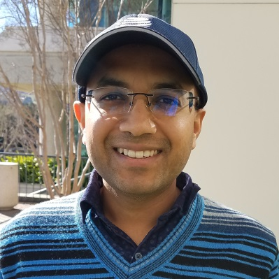

Dr. Gagan Raj Gupta
Associate Professor, CSE, IIT Bhilai
Dr. Gagan Raj Gupta is an Associate Professor of Computer Science and Engineering at IIT Bhilai with research interests in sustainable systems design, machine learning, and distributed systems. He obtained a IIT JEE Rank 17 and a gold medal at Indian National Physics Olympiad in 2001. He was the topper of the BTech computer science batch of students from IIT Delhi in 2005 and was awarded the institute silver medal.
He was awarded PhD degree from Purdue University in 2009. He worked as the Lead Member of Technical Staff at the prestigious AT&T Labs, USA for 10 years designing large-scale network intelligence solutions.
His current work focuses on areas such as NEP aligned school education, multimodal learning, industrial safety using EdgeML. He leads the Simple Sustainable Systems (S3) research lab and actively works on developing technology-driven solutions for healthcare and sustainability. His textbook on Data Analytics and Visualization has been published recently.